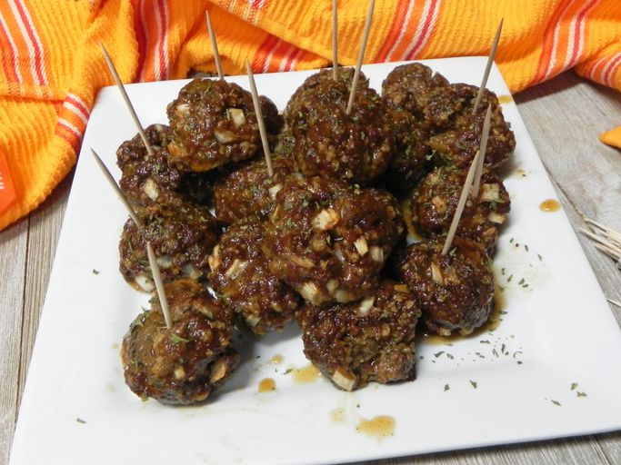

Cajun Meatballs

Cajun Meatballs are the parties favorite appetizer with a kick!
Mardi Gras is one big party. And from rubbing elbows at an elaborate ball to cutting into a king cake at home, there's no one way to celebrate. That goes for your Mardi Gras party menu, too!
Description
This is a great appetizer meatball recipe with a little kick to it. It can be made ahead and frozen in resealable plastic bags, then added to sauce and heated.
Ingredients
- 1 pound lean ground beef
- 1 ½ teaspoons hot pepper sauce
- 2 tablespoons Cajun seasoning
- 1 tablespoon Worcestershire sauce
- 1 tablespoon dried parsley
- ¼ cup finely chopped onion
- ¼ cup fresh bread crumbs
- ¼ cup milk
- 1 egg
- ½ cup barbeque sauce
- ½ cup peach preserves
Steps
- Preheat oven to 350 degrees F (175 degrees C). Lightly grease a medium baking sheet.
- In a large bowl, mix thoroughly the ground beef, hot pepper sauce, Cajun seasoning, Worcestershire sauce, parsley, onion, bread crumbs, milk, and egg.
- Form the mixture into golf ball sized meatballs and place on the prepared baking sheet. Bake in preheated oven for 30 to 40 minutes, or until there is no pink left in the middle.
- In a small bowl, combine the barbeque sauce and peach preserves.
- When meatballs are done, place in a serving dish and cover with the barbeque sauce mixture. Toss to coat.